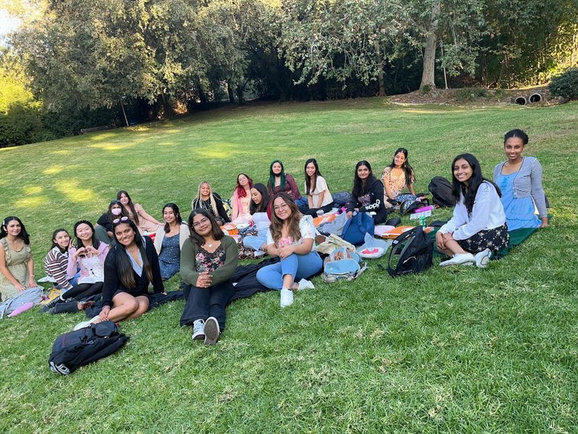
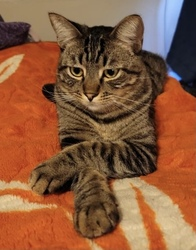
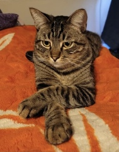

Jade Zuniga
My name is Jade Zuniga. I am currently a second year Psychology major attending the University of California, Riverside. I will be adding on a Business minor, specifically in Marketing. My educational goals include getting my
BA from UCR and then hopefully moving on to graduate school where I can get my Masters in Industrial-Organizational Pscyhology. My future career goal is to be involved in Human Resources, hence the interest in
Industrial-Organizational Psychology, as I am not particularly a fan of being in a lab and doing research work.
I am a young, passionate individual who puts effort and thought into everything that I do. I am committed into the work that I put myself and aspire to help others. I am a creative individual who loves to
apply my interests to my work and like to think as much as I can outside of the box.I enjoy being out in nature and try my best to have daily walks
where I surround myself in nature.
I have plenty of experience in leadership positions and understand what it takes to lead and delegate, understanding the full capacity of what it takes to be a leader while also being able to communicate with others.
One of my key strengths is my organization and my communication skills. Through my experiences, I have come to understand the importance of communcation and team work.
I have been President, Vice President, and Secretary for various clubs throughout my high school career.I have also done lots of volunteer work ranging from cleaning up streets, reading to children, helping out at the AIDS Walk in Los Angeles,
and planting trees at my local parks.
I helped my peers raise money for expensive test fees through fundraising, where I helped plan and execute fundraisers like selling food items and decorating doors for the teachers on holidays.
My job experience includes working as a Poll Worker for the 2020 election year. I have helped sell items such as elote, boba, and pizza for many of the clubs I was active in.
Additionally I have tutored in both math and English.
I helped my peers write essays and better their grammar and punctuation in addition to helping students understand math.
Currently, I am the Secretary and a part of the Writing Committee for an organization called HerCampus. HerCampus is a women's online magazine where writers, such as myself, have the ability to write
and publish pieces for other college students around the country to read. This is not only a magazine, but a club that strives to empower women and give them a safe and comfortable space to be vulnerable.
This organization is all about networking, educating, and expression.
As of right now, due to COVID, I have not had the opportunity to join many clubs or organizations at my university, but I am interested in joining Business clubs/organizations, clubs that do volunteer work, and Psychology based clubs - ones that
talk about IO Psych and can help me and my future goals.
Experience
Voting Poll Worker
• Helped registered voters sign in and get to the voting booth
• Helped unregistered voters register so they could vote
• Kept track of all the mail-votes and put them into the designated bins
HerCampus Secretary
• Help out with any tasks for the other committees
• Take meeting notes at club and general meetings
Volunteering at Elementary School
• Read educational books to 1st grade children
• Helped the children make a craft that correlated to the moral/lesson from the book
Math Tutor
• Helped my peers in their various math courses
• Volunteered during summer school to help students in remedial math
• Graded homework and quizzes
Education
University of California, Riverside
Portfolio



